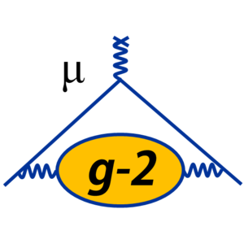
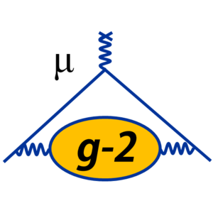
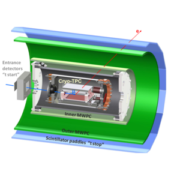

Muon g-2
A measurement of the anomalous magnetic moment of the muon, one of the most promising signals of physics beyond the standard model, to 140 ppb
A measurement of the anomalous magnetic moment of the muon, one of the most promising signals of physics beyond the standard model, to 140 ppb
MuSun will be the first precision measurement of this constant in the 2N sector and will help to calibrate the basic astrophysics reactions.

Aenean ornare velit lacus, ac varius enim lorem ullamcorper dolore. Proin aliquam facilisis ante interdum. Sed nulla amet lorem feugiat tempus aliquam.

Aenean ornare velit lacus, ac varius enim lorem ullamcorper dolore. Proin aliquam facilisis ante interdum. Sed nulla amet lorem feugiat tempus aliquam.

Aenean ornare velit lacus, ac varius enim lorem ullamcorper dolore. Proin aliquam facilisis ante interdum. Sed nulla amet lorem feugiat tempus aliquam.